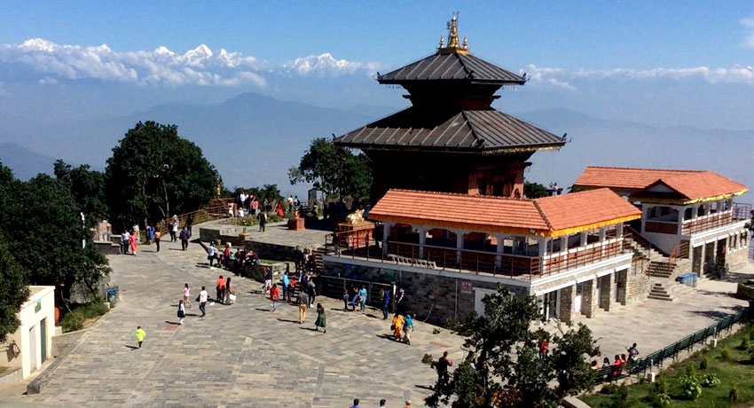
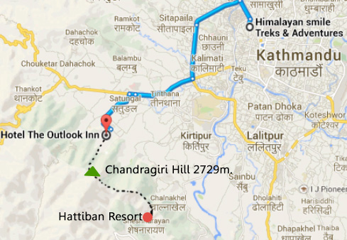

Chandragiri Temple

Chandragiri, located on the southwestern outskirts of Kathmandu, is a prominent heritage site that offers
breathtaking panoramic views of the Himalayas and the Kathmandu Valley. The hilltop of Chandragiri is home
to the historic Chandragiri Fort and Bhaleshwor Mahadev Temple, attracting both history enthusiasts and
nature lovers.
The Chandragiri Fort holds great historical significance as it served as a strategic vantage point for the
Kathmandu Valley. It was built in the 18th century by King Prithvi Narayan Shah, the founder of modern
Nepal, to monitor and protect the valley. The fort complex consists of ancient walls, watchtowers, and ruins
that narrate the tales of the bygone era.

Perched atop Chandragiri Hill is the Bhaleshwor Mahadev Temple, dedicated to Lord Shiva. This sacred temple
attracts a large number of devotees who come to offer prayers and seek blessings. The temple's serene
ambiance and stunning views make it a popular destination for spiritual seekers and nature enthusiasts
alike.
One of the main attractions of Chandragiri is its cable car ride, which offers a scenic journey to the
hilltop. The cable car ride provides a mesmerizing bird's-eye view of the lush green forests, terraced
fields, and traditional settlements of the Kathmandu Valley. As the cable car ascends, the snow-capped peaks
of the Himalayas gradually come into view, offering a magnificent spectacle.


Chandragiri is not only a place of historical and natural beauty but also a spot for recreational
activities. The hilltop features picnic spots, children's play areas, and restaurants where visitors can
relax, enjoy a meal, and soak in the tranquil surroundings.
A visit to Chandragiri provides a delightful escape from the hustle and bustle of Kathmandu city. It allows
visitors to immerse themselves in the serenity of nature, witness the rich historical heritage of the
region, and experience the mystical allure of the Himalayas.